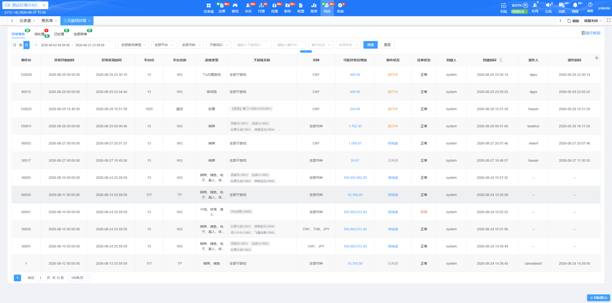
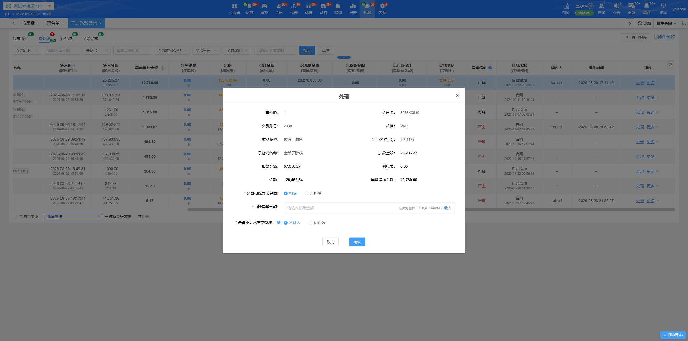
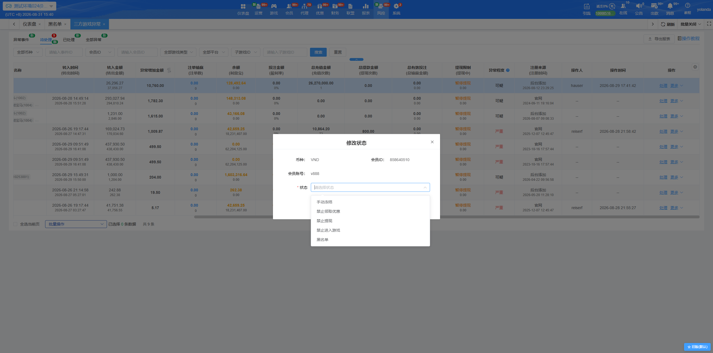
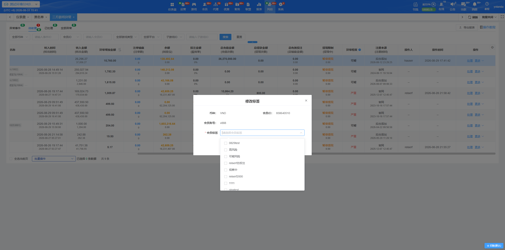
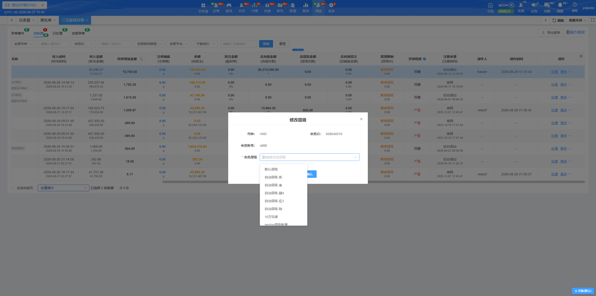

一、三方游戏异常
当第三方游戏平台发生异常时，系统会依据异常事件筛选命中会员并限制提现。站点后台可查询异常事件及异常会员资料，协助业主进行后续风险处理。

二、异常事件
- 功能位置：站点后台 → 风控 → 三方游戏异常 → 异常事件。
- 页面说明：用于查看本站点的三方游戏异常事件及异常会员处理进度。
- 搜索：可按事件创建时间、事件 ID、平台、游戏类型、币种、子游戏 ID／名称、事件状态及拉单状态组合查询。
- 列表字段说明：
- 可能异常总增加：展示该事件异常金额的加总；点击金额可跳转至「全部异常」页面，并自动带入事件 ID 查询。
- 事件状态：进行中（橘色）、待完成（蓝色）、已关闭（灰色）。
- 拉单状态：正常（黑色）或异常（红色）。
- 创建人：站点后台一律展示为 system；创建时间支持排序。
三、待处理、已处理、全部异常
- 功能位置：站点后台 → 风控 → 三方游戏异常 → 待处理／已处理／全部异常。
- 页签说明：
- 待处理：展示提现限制仍为「暂停提现」的异常会员。
- 已处理：展示提现限制为「无」的异常会员。
- 全部异常：展示所有异常会员清单；可额外按提现限制查询。
- 搜索：可按品牌名称（多品牌站点）、币种、事件 ID、会员 ID／会员账号、平台、游戏类型及子游戏 ID／名称查询。
- 列表重点字段：
- 事件 ID：点击可跳转至「异常事件」页面，并自动带入该事件 ID 查询。
- 异常增加金额：以粗体展示，支持排序。
- 注单输赢（注单数）：点击注单输赢金额可跳转至投注明细，并自动带入品牌、日期区间、会员账号、平台、币种及游戏等条件。
- 余额（利息宝）：余额以黄色粗体展示。
- 总充值金额／总提现金额：展示对应金额及次数；查询单一站点时才展示总有效投注及总输赢金额。
- 提现限制（提现中）：「无」为黑色，「暂停提现」为橘色；提现中展示正在提现的金额。
- 异常程度：严重（红色）代表新注册用户或只有该三方投注记录；可疑（黑色）代表非新注册用户。
四、处理异常会员
- 处理：仅提现限制为「暂停提现」的会员可操作。可选择是否扣除异常金额、是否不计入有效投注；选择扣除时，可查看最大可扣金额（余额＋利息宝），点击最大可自动带入金额；处理完成后会员状态会恢复正常。
- 批量处理：仅「暂停提现」的会员可勾选并进行批量操作。可批量设置扣除异常金额、扣除金额与计入有效投注方式；处理完成后会员状态会恢复正常。

- 修改状态：可修改会员的手动冻结、禁止领取优惠、禁止提现、禁止进入游戏及黑名单状态；支持批量修改。

- 修改标签：可修改会员标签；支持批量修改。

- 修改层级：可修改会员层级；支持批量修改。

五、注意事项
- 异常会员在提现限制为「暂停提现」期间无法发起新的提现申请，其中已建立但尚未完成审核的提现订单也将暂停审核；处理完成后请确认提现限制与会员状态是否符合预期。
- 多品牌站点需特别确认所选品牌，避免跨品牌误操作。